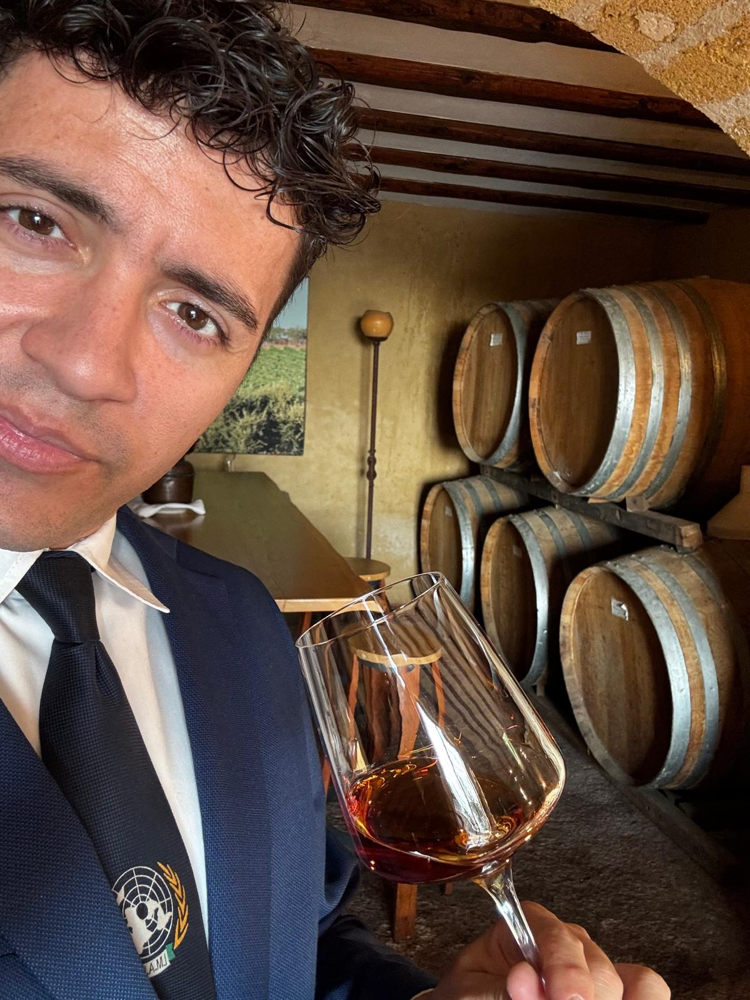
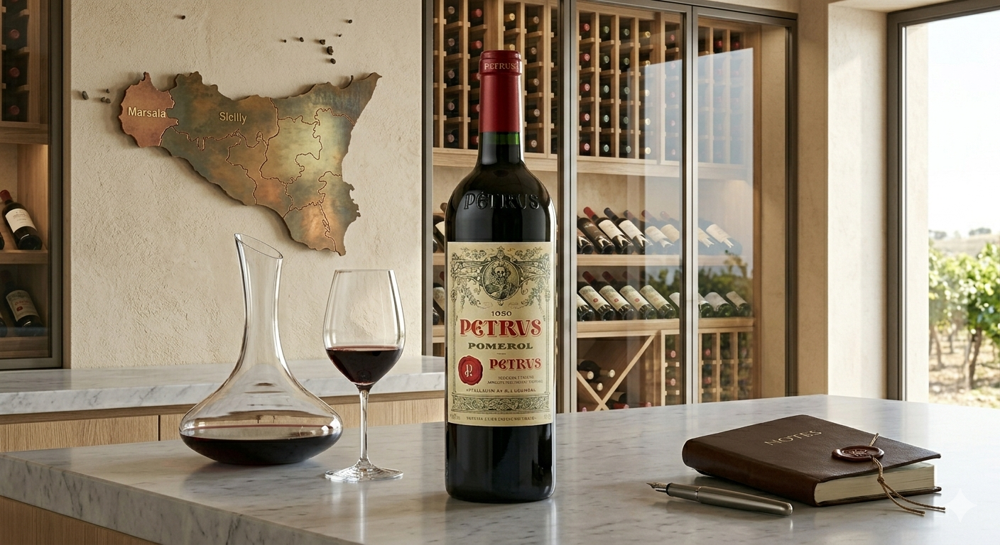
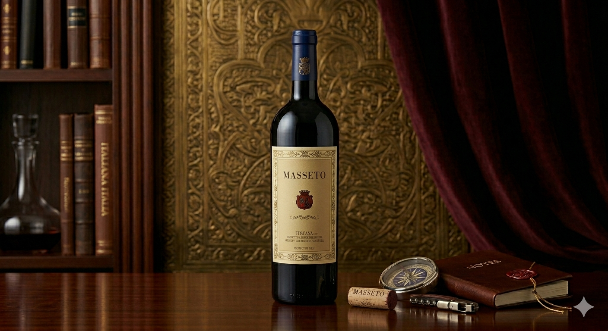
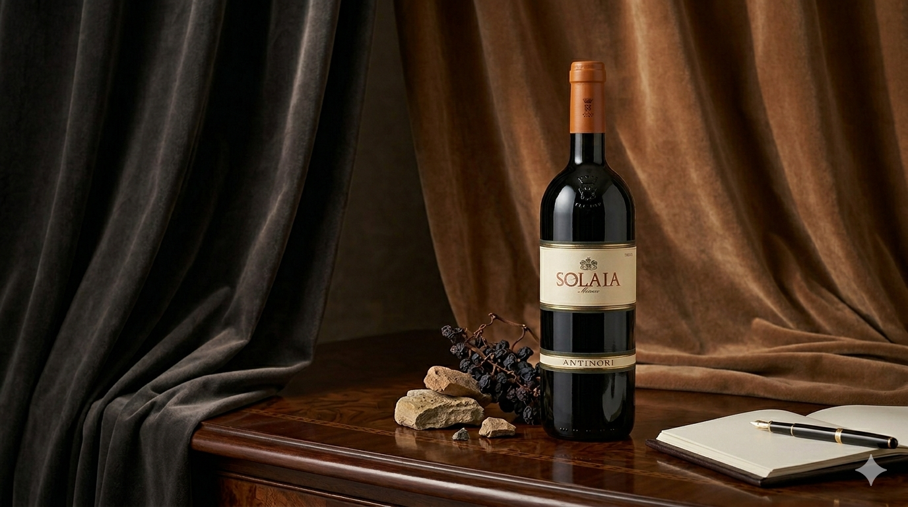

Sommelier & Wine Enthusiast

If you are looking for me, you will probably find me with my nose in a glass or traveling to a new winery. For over 15 years I have dedicated my life to the study of wine. I have never been content to just read labels: I have traveled the world to touch the vineyards firsthand, listen to the stories of the producers and breathe the true wine culture. I currently work in a wonderful Wine Resort in Sicily, where I transform my passion into unique sensory journeys for our guests. My thirst for discovery is infinite: there is always a new wine to discover, a new story to unveil and, above all, a great glass to share.
My mission is to transform every sip into an unforgettable sensory journey.
Help me expand my knowledge! These rare labels are my next goal. Every donation, no matter how small, brings me closer to the bottle. Once the goal is reached, I will taste it and publish the review with thanks to all supporters.

One of the most legendary wines in the world. A pure Merlot masterpiece from the right bank of Bordeaux. Goal: acquire a bottle for a historic tasting.

The king of Italian Merlot. A wine every sommelier dreams of tasting at least once.

"Complex and layered. Black fruit, dark chocolate, and balsamic notes. A masterpiece of balance."
✓ Goal Reached!Tasted on 03/15/2024 - Review published
These labels were made possible thanks to your generosity. Here are the reviews and acknowledgments.